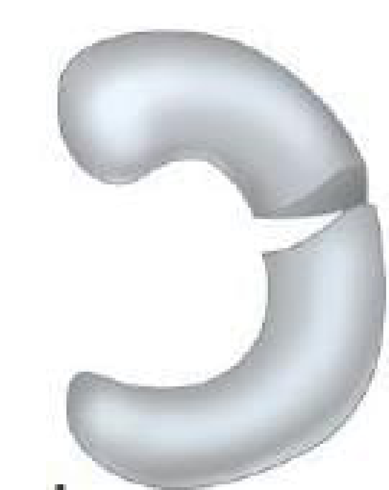

Uma figura, quatro padrões de lesão meniscal. A direção da linha decide a resposta.

Comente a sua letra antes de arrastar.
Cada padrão de lesão tem o seu plano. É isso que a banca pede para reconhecer.
O corte vai da borda livre (interna) em direção à periferia, perpendicular às fibras circunferenciais.
Em rampaFica na junção meniscocapsular periférica do corno posterior medial, sem atravessar o menisco.
HorizontalPlano axial, que separa lâminas superior e inferior.
LongitudinalParalela às fibras circunferenciais.
Se chega à periferia ou à raiz, perde-se o hoop stress: equivale à meniscectomia.
CompletasSuturar sempre que possível (técnicas em cruz ou transtibiais), para restaurar o hoop stress.
Parciais pequenasNa zona avascular, regularização.
Ruptura perpendicular às fibras, da borda livre para a periferia, é radial.
TEOT e TARO, alternativa por alternativa, para treinar no tempo que sobra do plantão.
ortoquestoes.com.br
Guarde a sua letra.
A resposta sai no próximo story.
O corte vai da borda livre para a periferia, perpendicular às fibras circunferenciais.
Em rampaJunção meniscocapsular do corno posterior medial.
HorizontalSepara lâminas superior e inferior.
LongitudinalParalela às fibras.
Radial que chega à periferia perde o hoop stress: equivale à meniscectomia.
Comentário completo no feed de hoje.